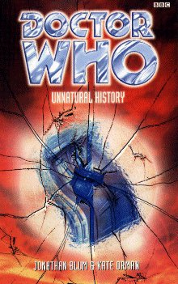

|
Unnatural History
|
BASIC PLOT DOCTOR COMPANIONS MATERIALISATION CIRCUIT Pg 238 In the alley, where it's been all along covering the scar. Back where it all began. Pg 245 At the Golden Gate Bridge. Pg 267 The TARDIS is recreating itself in Golden Gate Park, materialising fully on Pg 268. Pg 278 It's gone to London by now. PREPARATORY READING CONTINUITY REFERENCES "She look around the bedsit for something to thump him with." The King's Cross bedsit, that we've been hearing about since Alien Bodies, finally makes it's on-screen debut. Pg 2 "'We stopped the smugglers of Nephelokokkugian and the Dalek invasion of Tuvulu.' His eyes were burning. Every word was true. 'We battled the tyrant queen of Hyspero and we returned a lost Triceratops infant to its mother. Side by side we righted wrongs and bought T-shirts on dozens of worlds.'" Apart from being a truly dreadful piece of dialogue, this references The Scarlet Empress and Sam's T-shirt collection. Everything else is unrecorded. Pg 4 "'The first one arrived about five years ago,' said Dad. His grey hair had thinned out even more since the last time she'd seen him. 'Back in ninety-seven.'" These are Sam's postcards, and the first one's roughly concurrent with The Eight Doctors. Pg 5 "He handed her another card, and another, postmarked from all around the world. San Francisco. Auckland. A letter dated London 1894 with 'Do not deliver until 1 August 1997' written on it." Vampire Science. Unknown. The Bodysnatchers. "Come to Kursaal - A World of Surprises." Kursaal. Unsurprisingly. "And then the man from the army came by. He said you'd been... sighted in San Francisco. With the Doctor. You'd asked the army to get in touch with us." Vampire Science. "Well, it was around the Mars '97 mission." The Dying Days. Pg 7 "'You never spray-painted a billboard?' he asked." She almost did, it turns out, and it was first mentioned in Seeing I. Pg 9 "She still couldn't place his accent. A bit Scouse, maybe?" A reference to Paul McGann's city of origin, and the fact that he didn't always perfectly cover up that location in his fake accent in the Telemovie. Although best of luck spotting those points, because I'm damned if I can; the man's a pro, after all. "I remember some weird story about how the police got him. In a junkyard." The Eight Doctors, but without Sam. As so many of us wished it could have been. "It's the principle of conservation of propinquity, you see." It means 'nearness' or 'similarity,' in case you were wondering. Pg 10 "'You mean your Sam fell into a great big swirly thing?' 'No no no. There's no swirly thing.'" Reminiscent of 'Swirly thing alert' from Red Dwarf and also, she did, indeed, fall into a great big swirly thing last time, in Dominion. "The Doctor had picked up an old toy, a monkey with a drum." I'm pretty sure that was there in 1963, in An Unearthly Child. Pg 11 "She could hear him rattling the gate as she sprinted down the alley. There was a crash as he started to clamber over it." This is a reversal of the opening scene of The Eight Doctors. Pg 13 "No hospital. Not that bad." The Eighth Doctor still doesn't like hospitals after the Telemovie. Which is odd, since the Seventh Doctor didn't seem to have a fear of the TARDIS console after he regenerated. Pg 14 "He looked too good for this dump, this cramped and badly lit bedsit reeking of Benson and Hedges." Sam's cigarette of choice was first mentioned in Alien Bodies. Pg 15 "Down these surreal streets went a man who was not himself surreal - though he was making a pretty good stab at it nonetheless." Apart from being a thoroughly brilliant line that we wish we'd written, it's a skit on a line by Raymond Chandler, often quoted by Terrance Dicks, and its original gave us the book title Mean Streets. Pg 17 "Oh, he'd had a taste of it for a day or two, back in Sweden." Dominion. "His squiggly hair blew around his face." Fitz's hair is 'squiggly' because it's still growing back in the wake of Revolution Man. Hey, we're gradually building up a picture of the guy even though we won't get a full description until, criminally, The Space Age. Pg 18 "Nice to think 'his' decade was now looked back on as some kind of golden age, but they'd been a bit slack in building the Future. Where were the robots? The jumpsuits? The jetpacks?" Why, they're in the back cover blurb of The Space Age, of course. Silly question. "Plus this great theory that Elvis was rescued from death by a vampire gang." Sounds like something mentioned in Vampire Science, but I could be wrong. Pg 19 "Ben and Jerry's had been the same. The Doctor had insisted they go there as soon as they'd landed. Sam had groaned when she saw the shop sitting on the corner of Haight and Ashbury." It seems that the TARDIS arrived at roughly the same place it did in Vampire Science originally, and Sam certainly remembers the shop from the end of that adventure. Pg 25 "Day Zero Minus Two" This pattern of breaking up the book is suspiciously similar to the final few episodes of season 3 of Babylon 5, with their endless 'Z minus 7' messages. Pg 27 "He just couldn't stand being cooped up in one place for so long." The Doctor still gets itchy in 'captivity' after Seeing I. "He told her about being President Elect of the High Council of Time Lords, keeper of the Legacy of Rassilon, Defender of the Laws of Time and Protector of Galloway. Or something." A little bit like the opening of The Deadly Assassin, though not much. Galloway is probably the old Baker and Martin 'some place in Ireland' joke again. The rest of it, if you're on this site, you pretty much ought to know. And see Continuity Cock-Ups. Pg 30 "His hair was a straggling mess, looking as if it was still growing back after a really severe cut." Revolution Man again. Pg 31 "Doctor Bowman sent this up for you, ma'am." The Doctor's nom de guerre from the Telemovie and Seeing I. Pg 32 "Lots of unconfirmed cryptozoological sightings." I'm sure the word 'cryptozoological' is a reference. Damned if I can work out what it's to, though. "I phoned General Kramer from the airport, just in case." From Vampire Science, and the dodgy video, Time Rift, before that. "It's like last time: she'll be along in a minute, just as soon as we give up hope. I mean, it sounds like missing presumed dead is almost her default state anyway..." Last time was Dominion, and the 'default state' line is a reference to all the nasty things that keep happening to Sam in the books. Pg 34 "It all began at midnight on December the thirty-first, 1999." The Telemovie. Pg 35 "When a singularity opened in San Francisco." The Telemovie. "'And, in the end, the entire Earth was forced through an opening the size of a bathtub.' [...] 'Bollocks'" A quick summary of the Telemovie, and then Sam puts a word to a lot of people's reactions afterwards. Pg 37 "The alley opened up to a loading area, stacked with crates and rubbish dumpsters." The alley from the Doctor's fatal shooting in the Telemovie. Pg 45 "ITAR seem to have lost most of their funding after the atomic-clock debacle." The Telemovie. Another reference to Adrienne Kramer from Vampire Science. Pg 47 "If he loses the TARDIS... I saw him when she nearly died, a few weeks ago." Dominion, and it sounds like a continuity cock-up, given that Dominion was supposed to lead straight into this story, but it turns out that it's not later on. "The Doctor had appeared in the doorway, and he'd just tossed a large white cube at her." The same as the one from The War Games. Pg 48 "Once the epistopic interfaces of the space-time continuum are properly aligned." This is a quote from the nonsense that the Valeyard gabbled through at the beginning of The Trial of a Time Lord, and it makes about as much sense here as well. Pg 49 "'Enough of this,' said the Doctor." The tag-line from The Left-Handed Hummingbird. "She [Time] didn't eat me because I did a deal with her." The NAs, mostly ones by Paul Cornell. Pg 51 "I don't want to be anywhere near you when the laws of time catch up with you." Blinovitch, of course! Day of the Daleks and beyond. Pg 53 "You're already playing fast and loose with reality. Only your hairdresser knows for sure." And the Doctor's last hairdresser was a vampire, in Vampire Science. Pg 55 "Here's a quarter, kid, take the bus to the movies." We had this joke in Dominion, too, but it was six bob, then. Pg 57 "The differences between twenty-first century America and the planet Quinnis in the fourth universe." Mentioned way back in The Edge of Destruction as one of the places that the Doctor and Susan had visited. Quinnis in the fourth universe, that is. No way they'd go somewhere as backward as America in the twenty-first century; they were British! "I was eighteen years old when I came to San Francisco. I arrived with the Summer of Love." Knocking around during Wonderland, then. Pg 58 "How much brainwashing had it taken?" Revolution Man. Pg 59 "'We were separated,' he said. 'She found herself on an unknown planet with nothing but the clothes on her back. She spent three years fighting to survive, to find work that she valued.'" Seeing I. Pg 60 "She rolled up her sleeve, showing the scattering of blotchy needle scars." We heard about these in Alien Bodies. Pgs 61-62 Just a comment really. If I'd co-written the pretentious Mother Earth nonsense invocation with Kate Orman, as Steven Caldwell did according to the acknowledgements page, I'd make damn sure no one ever found out. Pg 70 "The Doctor appeared in the doorway, clothes miraculously arranged and buttoned." He could get dressed very quickly in The Janus Conjunction as well. Pg 73 "He'd never learned to read Chinese, not properly, even after months in the Collective." Revolution Man. Pg 74 "Three years ago - as the clock chimes - he had lain bleeding in this alleyway on a cold and dangerous December evening. Hours later he had shed one cold skin for another, stumbling out into a new life, tangled in a shroud." Lovely description of the Telemovie there. Pg 75 "She'd been so badly damaged at their last port of call, she needed more time to heal. In the end he'd made her hold off, and they'd spent weeks doing nothing more strenuous than tracking down and gathering the flotsam they'd lost into the vortex when she'd been ripped open." Dominion, and what came after. Pg 78 "A Delphonian, a Tythonian and a Tersuron walk into a bar..." Spearhead from Space, The Creature from the Pit and The Deadly Assassin/The Curse of Fatal Death. Pgs 84-85 "With your alter ego gone, for the safety of the cosmos, I have to make the supreme sacrifice." Fitz justifying himself as being 'the nice one' of the Doctor's companions sounds startlingly like the Master's explanation for his joining the Whig cause in The Adventuress of Henrietta Street. Pg 85 "The unicorn gave a low, rolling snort, looking from Fitz to Sam and back again, then moved closer. Zeroing in on her now, lowering its head to her level." This is a deliberate riff on The Mind Robber, and the subsequent subversion, when it stops and mugs them for chocolate, is quite amusing. Pg 90 "I also gave them the number of an admiral in England who might be able to help them get home." Admiral Isaac Summerfield, from Return of the Living Dad. Pg 94 "Without hesitating, he jumped up on the railing and flung himself into the water." There's a moment in Walking to Babylon that's just like this. "I've seen madness. It doesn't help." The Taint. Pg 99 "The Memory Cheating Ain't What It Used To Be" The chapter title refers to John-Nathan Turner's oft-quoted phrase about how 'old' Who was nowhere near as good as people remembered it. He was right, in a way, but that didn't per se make '80s Who any better. Pg 105 "Sam started - no, it was a dummy, dressed in an elaborate costume." Since they're in a science-fiction bookshop at the moment, a man with a post-modern sense of humour might suggest that the dummy is dressed as the fourth Doctor. Is there a Forbidden Planet in San Francisco? Pg 111 "I've believed sillier things before breakfast." A reference to the line in The Five Doctors, itself a quote from Alice in Wonderland. "He gave up on the logjam of words and grabbed Fitz. 'Ohh no,' said Fitz, and turned his mouth away." Fitz expects the Doctor to kiss him, as he did in Dominion. Pg 115 "'A little lower and to the left,' said the Doctor. 'Yes, right there, that's it!'" Outrageous sexual innuendo, even for an OrmanBlum book! Pg 116 "This time I'm getting sudden, vivid memories of being ten years old. Getting caught skinny-dipping with a pretty female cousin of my acquaintance." Cousins from Lungbarrow and other such. The story, well, we think we'd remember it if we'd seen it. Pg 119 "He had seen unicorns once or twice before." The Mind Robber and Cat's Cradle: Witch Mark. Pg 124 "'It's just a squirrel,' she said. 'You never can tell,' said the Doctor." 'You never can tell' is from Paradise Towers, bizarrely enough, although that's probably not deliberate, whilst his concern about squirrels come from the vampire crack squirrels of Vampire Science. Pg 133 "I remember what happened at midnight on New Year's Eve two years ago, even if most people don't." The Telemovie. A goodly number of fans might also wish for a similar attack of amnesia. Pg 134 "Maybe the whole universe revolved around the present moment, and everything outside that, past and future, was up for grabs." Yes, folks, the Telemovie can, in fact, rewrite history, every single damn line. Pg 135 "'Yeah, I know,' said Fitz, 'But would you really want the mad professor messing with your biology?'" The Doctor of the NAs kept doing that to his companions, and it seems unlikely that he ever told them he was doing it. "I spent eight months in China as a nicely brainwashed little Red Guard." Revolution Man again. Pg 136 Apparently he spent most of that time banging a tambourine and singing songs in praise of Chairman Mao. "But in the weeks since I saw the error of my ways, I've already almost managed to get an entire species wiped out, all by myself. Just 'cause I thought I was doing the heroic thing." Dominion, but see Continuity Cock-Ups. Pg 137 "Sam shrugged, she'd missed the [Lord of the Rings] movie 'cause it looked too crap even for the video gang." Oops, I certainly wouldn't have wanted to predict that before I'd seen it, and I bet Sam - or Kate and Jon - are feeling quite silly now. Damn fine movie. Pg 138 "The front room reminded him at once of the console room." The front room of Joyce's house feels like a TARDIS, which is probably one of the reasons that people think Joyce is Chronotis. Pg 139 "He could have Carolyn and James over for dinner, go cycling with Grace. Long chats about new books and old adventures." Vampire Science, the Telemovie, the New Adventures. "Would they work together, fending off alien invasions and defeating mad scientists?" A la the Pertwee era. "He inched back the curtains, looked out at the city lights, thinking of fireworks over the Bay." The Telemovie. Pg 143 "'You'll just have to have patience, Doctor.' 'Very, very funny.'" It's very subtle, but the implication is that Joyce knows of Patience from The Infinity Doctors and Cold Fusion. Pg 144 "Who do you think had to rush over to get that prattling fool Wagg a spare beryllium chip?" The Telemovie. "Well did you know I spent a whole week cleaning up the after-effects of your visit to Youkali." Youkali appeared in Return of the Living Dad. "You topple governments on a spare weekend." The Happiness Patrol (and later The Christmas Invasion). Pg 145 "'Oh? Who is President there nowadays?' 'Flav- No, Rom-' A frown creased his forehead. 'Do you know, I'm not entirely sure.'" A result of the dichotomy between Lungbarrow and The Eight Doctors. Pg 147 "I've still got spots of blood on my shirt cuff. See? From a few weeks ago, the last time I had to do what was necessary." Revolution Man. And does the man never change? No wonder Sam wanted to take his clothes off. "He'd said he needed a breath of air after Kyra put on that Kathmandu album." Revolution Man. Again. Pg 161 "You know, I'm a big fan of your early stuff." The Faction boy now sounds like the Whizzkid from The Greatest Show in the Galaxy. Pg 162 "'No spoilers,' he said." The Doctor doesn't want to know the future, as in Alien Bodies. "Leaving notes for yourself." Battlefield, Timewyrm: Revelation and then some. "The whole post-destination thing with the Vervoids." Trial of a Time Lord, episodes 9-12, along with the way he kept trying to avoid them in books like Millennial Rites. "The way you tricked the Dalek Empire into tangling their timeline so bad that their history collapsed under the weight of the paradoxes." War of the Daleks; also confirmed in The Infinity Doctors. Quite a funny line, actually. "That was your birth cry, wasn't it? Barely a day old, and the first real thing you do is reach for the timelines and grab, twist and pull." The Telemovie. "In the last few years, you've met more people from your own past and future than you ever have before." The Eight Doctors and Alien Bodies, specifically. "You've ridden the Ouroborous in the Emindian war." Vanderdeken's Children. Pg 164 "Called the Blin-o-vitch Lim-i-ta-tion Ef-fect." Day of the Daleks and on ad infinitum. Pg 165 "The Mobius strip was everywhere, the lazy eight of infinity, of contradiction." The Infinity Doctors, as people pointed out, was like The Eight Doctors, only lying down. Funny, though, because it was The Eight Doctors that seemed lazy. Pg 168 "Mr Saldaamir looks like he's about to combust!" Mr Saldaamir appearanced in Father Time and The Infinity Doctors. "Is this the version where they banned all mention of his name, and yours, for consorting with aliens? Or the one where he got every record of himself deleted from the files?" The former sounds like Cold Fusion, the latter like Chronotis's sudden absence from the files in Shada, or Grandfather Paradox's in Alien Bodies. It also sounds like what the Doctor did in Transit to Earth's data storage facilities. Pg 169 "Maybe you didn't use [sic] to have a father." Anything pre the Telemovie. "Maybe you're living in the middle of a time war. Maybe there's an Enemy out there [...] who's rewriting you when you're not looking." Something from before the new series, something from Alien Bodies. Or possibly Russell T. Davies. Pg 170 "Maybe you weren't always half-human." The Telemovie. "Maybe you weren't always a Time Lord." Silver Nemesis. "Maybe you originally came from some planet in the forty-ninth cenury. Fleeing from the Enemy who'd overrun your home." The Pilot Episode, Alien Bodies and The Infinity Doctors, and - may we just say - brilliant juxtaposition. "He pointed with his eyes at the clamps holding his head in place." Like the Telemovie. "I'm sorry if you were hoping for a tormented scream of 'Who am I?'" The Telemovie, and another nice nod at it. Pg 171 "Maybe there's no one left on Gallifrey [...] Maybe they all left. Or maybe the whole planet's being destroyed, and undestroyed, and destroyed, and you just caught them at the wrong moment." How very prophetic, albeit utterly by accident. 'Maybe they all left' is Dead Romance. The next bit sounds like The Ancestor Cell, The Gallifrey Chronicles, and the prelude to the new series. For the record, it's also what happened to Skaro in The Infinity Doctors. "Think about it. If the old guy in the tomb didn't want any hanky-panky on Gallifrey, don't you think he'd want to make sure you were paired up with a good little girl, who'd never dare to screw you?" The old guy in the tomb is, obviously, Rassilon from The Five Doctors, and maybe that's why Sam ran away in Longest Day. Pg 175 "She didn't have the muscles that came from running three miles through the TARDIS corridors every morning." The real Sam has been doing this, on and off, since The Eight Doctors. Pg 195 "I've even sighted a Sidhe [...] moving freely through the eleven dimensions." Forward reference to Autumn Mist. Pg 200 "'Oh yes, I see,' said the Doctor in a mocking upper-class lisp. 'As I was just telling Tubby Rowlands down at the club'" The Doctor impersonates Jon Pertwee, who also referred to Tubby Rowlands in Terror of the Autons. Pg 201 "Gallifrey. The Time Lords. And the real old days." Silver Nemesis, but it's not really. She then goes on to do a pretty clever riff on the Doctor being Valen from Babylon 5. Pg 202 "'But half-human on which side?' 'His mother's,' she guessed." Got it in one! The Telemovie. Pg 212 "The last time I dropped acid was in 1968." The Left-Handed Hummingbird. "And then there was the hallucinogenic venom I used with the Snakedancers on Manussa." Snakedance. Pg 213 "On the other hand, Jo Grant gave me one of her hayfever tablets and I had flashbacks for decades." The Mind of Evil. Sort of: Jo's pill seen there was never identified and most prople - Kate Orman included - assumed it was aspirin. The aspirin reference was thus (inadvertently) introduced in The Left-Handed Hummingbird. This is a riff on that. "Uncle had a suitably large garden, in the section of the Needle closest to the singularity at its heart." The Needle first appeared in The Infinity Doctors, and Miranda would eventually take it over in Father Time. That it, like Gallifrey, has a singularity at its heart suggests, once again, that it is something to do with where the Time Lords ended up. Pg 215 "Professor Joyce called in his assistant, a serious young woman with reddish-blonde hair. 'Larna, could you keep an eye on the nanocircuitry web for me, please?'" This is the Doctor's star pupil from The Infinity Doctors. Pg 216 "Sometimes I wish that old banger of his would pack up for good. Maybe without his TARDIS he might learn to appreciate the value of putting his feet up for a while." How prophetic. Kind of what happens in the Caught on Earth arc, although the Doctor certainly doesn't appreciate it. "But now she could make out that they were a tattoo, scarred in a botched attempt at removing it, a lengthy serial number in blue-black ink." Despite the description, which is implicit of a concentration camp, this still could relate to the Shada tattoos and Jon Pertwee's one seen in Spearhead from Space, later retconned in The Discontinuity Guide as a Time Lord prison mark and mentioned in Christmas on a Rational Planet (pg 205). "I've never been very good at the whole "do I have the right?" sort of thing." Genesis of the Daleks. Pg 217 "Her eyes wandered over his desk. There was a small framed print of an elaborately gowned, slightly plump redhead in the far corner, beside a larger family portrait of Joyce with his wife and a daughter in her thirties." The 'slightly plump' redhead is Penelope Gate, from The Room With No Doors. She was seen in a picture in the Doctor's room in The Infinity Doctors (p17). The other person in that picture was of a powerfully-built man with rugged features, who is clearly Joyce. They're confirmed as the Doctor's parents in The Gallifrey Chronicles. Pg 219 "She's been getting so headstrong - very clear ideas about where she wants to go..." The TARDIS's headstrong nature is explained in Interference part I, and has been going on for some time, at least Dominion. "I only took the TARDIS to low-risk places while she recovered... dropping the T'hiili off in one of the yellow dimensions, that sort of thing." Dominion. Pg 220 "'I could have stayed here,' he murmured. 'Here in San Francisco. A few years ago, the opportunity to settle down presented itself.'" The Telemovie. It's probably a coincidence, but 'I could have stayed here' is nearly what the Sixth Doctor says in the marvellous rant which is about the only reason to watch The Trial of a Time Lord. "There were always new adventures." Sadly, there weren't always New Adventures. "After a while I hardly saw anyone from the old days at all." That's because Virgin owned the copyright on most of them. "I only used to be able to have this sort of conversation with cats." Human Nature and Vampire Science, amongst others. Pg 221 "Joyce settled back alone at his workbench and methodically began to pack the exitonic circuitry away." The Matrix was based on this, according to The Deadly Assassin. Pg 230 "I could probably say I was born in 1980 and this guy would dismiss it as too round a number." Sly dig at fans who try and explain Sarah's "I'm from 1980" line in Pyramids of Mars as her rounding off. Pg 235 "She heard the whining sound of the car's left side being reshaped, ironed out, the door popping out of the frame as they scraped at last to a shuddering halt." The Bug gets it, and is never seen again. How symbolic that the Doctor destroys the Bug, his mode of transport, to get to the TARDIS, the mode of transport that he is currently destroying. Pg 237 "'Just go away,' the Doctor said again." Famous line from Nightmare of Eden. Pg 239 "The butterflies meandered sadly, flecks of life with nowhere to go." The butterflies appeared initially in Vampire Science. "If the TARDIS isn't generating a convincing environment metaphor, we should be seeing lots of weird things." The TARDIS also turned off its environment metaphor in Sky Pirates!. Pg 241 "I'm the Doctor. I win." Almost the tagline from The Gallifrey Chronicles. Pg 246 "The crystals broke into thousands of tiny pieces, melting into the glass, running back along the cables." The Doctor had similar cables in Seeing I. Pg 256 "He changes everything he touches, and he's touched me" Sam gave this as a description of the Doctor in Seeing I. Pg 258 "Number eighteen." This is the one that Sam doesn't know. Given that all of these 'number' things were based on a throwaway comment made by John Nathan-Turner about the TARDIS crew at the beginning of Season 18 - they were so aware of each other that they wouldn't have to explain things, just shout numbers and they'd all know what to do - the choice of '18' for the one Sam doesn't know is probably more than coincidence. Pg 261 "There's only one person who'd reach out to you now. Pity you've just battered him into unconsciousness. Pity you wouldn't believe in him even if he was there." OK, I don't usually do this, but isn't that a lovely line? Pg 267 "Beside him stood a shifting mass of coloured panes, glittering in the sunlight." The TARDIS is healing itself and recohering, pretty much like it would later do in Father's Day. Pg 268 "'You mean Dr Holloway, don't you?' 'Ah, no. Actually I called on her the other night.'" Grace, from the Telemovie. "Molly's was gone, as if it had never been there." Fitz used to play guitar here, in The Taint. Pg 269 "Or maybe he'd just caught the habit off Iris Wildthyme." The Scarlet Empress et al. Pg 270 "'Gin again?' Fitz asked with a knowing wink." That's what she had in The Taint. We're given an explanation now as to why she wanted to get drunk then. "A while back, all her own scars - even her vaccination - had been erased by some overenthusiastic nanotechnology." Beltempest. "That was the nineties: everything remixed, sampled, rearranged without quite being really remade." That's also, it should be said, the Doctor of the nineties and, arguably, Doctor Who of the later nineties. "Somehow the idea that a few years from now she could be anywhere, doing anything, no longer felt so exciting." Presaging Sam's decision to leave in Autumn Mist, and her actual departure in Interference part II. Pg 272 "Once upon a time there was a lion cub with a thorn in its paw." This sort of analogy/fairy tale is rooted in Ben Aaronovitch's style, particularly the one used in The Also People. Pg 273 "I just want my shadow back." Foreshadowing of Interference part II and beyond. "The Book of Lies says there's a great darkness going to fall over the universe." This could be the Enemy (Alien Bodies etc.) or the later Time War (The End of the World etc.) "Well, more like greyness..." And this is the grey at the end of the Universe from The Infinity Doctors. Pg 274 Who created Blonde Sam? "The Time Lords? Some ancient evil?" The latter would be someone like Fenric, from The Curse of Fenric, in the style of Ace. Pg 276 "The other Sam had never built a house." Seeing I. "The Doctor himself was nearly ready, as the threads that had begun weaving through his history lifetimes ago tightened inexorably into a knot." We'll find out what this means in Interference part II. Pg 277 "Bollocks." Benny's carefully-considered academic opinion on Watkinson and Thripstead's Introduction to Quantum Esotericism. And, yes, we know it's her because it's written on a yellow post-it note. Watkinson and Thripsted are referenced throughout the Benny NAs, most notably Tears of the Oracle, where Watkinson himself is seen in flashback. Also mentioned in Alien Bodies, in the author's note, amongst other things. OLD FRIENDS AND OLD ENEMIES Faction Paradox, this time represented by a small child numerous times over. Larna, from The Infinity Doctors. NEW FRIENDS AND NEW ENEMIES Sam's parents, who we've never really seen, but we've heard lots about. Walter Markowitz. Eldin Sanchez. Bob and the other Henches. Some unicorns. A street juggler, who appears to be vastly significant and isn't.
CONTINUITY COCK-UPS PLUGGING THE HOLES [Fan-wank theorizing of how to fix continuity cock-ups] FEATURED ALIEN RACES Wild Mandelbrot turtles, a herd of Unicorns in Golden Gate Park (who have multiple stomachs and can teleport), a Dragon, Basardi, elegant humanoids in embroidered veils, a half-giraffe/half-Lego set, a nightbumper, a furphy, bog wraiths, serpentoidians, three-eyed men, hypnoredips, robo-destroyers, and a leopard woman. There's also a dodo, not an alien by location, but certainly one by time. FEATURED LOCATIONS San Fransisco, like a grand tour of the city, including the Golden Gate Bridge, the Bay, the Park, the cable cars, a music shop, a purveyor of comics and sci-fi books, Berkely University Campus and a not terribly famous alleyway where nonetheless something quite important once happened. All of this in the space between about the 1st and 11th of November, 2002AD. IN SUMMARY - Anthony Wilson |
|
 |